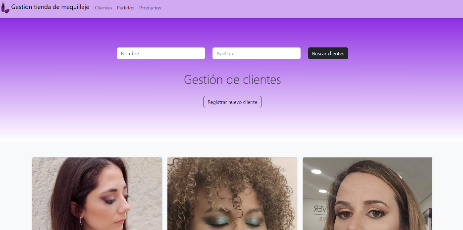
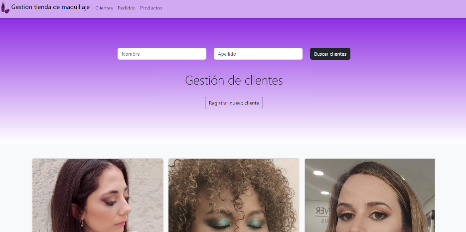

NAVEGA AL
MUNDO DIGITAL
Diseño Web Zaragoza
Sobre mi

¡Hola! Soy Carlota Cetina, una apasionada de la tecnología y el diseño web. Con 36 años y una amplia experiencia en trabajos cara al público, he decidido dar un giro a mi carrera y adentrarme en el mundo del desarrollo web. Vivo en Zaragoza y aquí es donde he decidido establecer mi camino como profesional independiente. Después de estudiar desarrollo web en esta ciudad, me lancé a la aventura de ser mi propia jefa y crear sitios web increíbles. Me enorgullece ofrecer mis servicios como freelance para el diseño de páginas web a precios asequibles en Zaragoza. Mi objetivo es ayudar a pequeñas y medianas empresas, emprendedores y profesionales a tener una presencia digital impactante y atractiva. Si estás buscando una página web que refleje la esencia de tu negocio y atraiga a tus clientes, estás en el lugar correcto. Estoy entusiasmada de trabajar contigo y llevar tu proyecto al mundo digital. ¡Pongámonos en marcha y creemos juntos una presencia en línea que destaque!
Proyectos
¡Bienvenido al mundo de la creatividad digital! Aquí te presento una muestra de mis proyectos de diseño web, donde la imaginación cobra vida en cada página. ¿Estás listo para explorar juntos el poder de la estética digital? Adelante, descubre el arte del diseño en línea y comencemos a crear algo asombroso.
 
